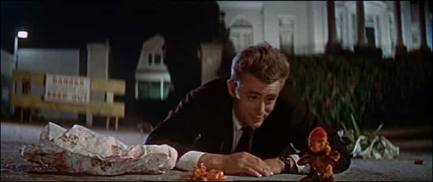
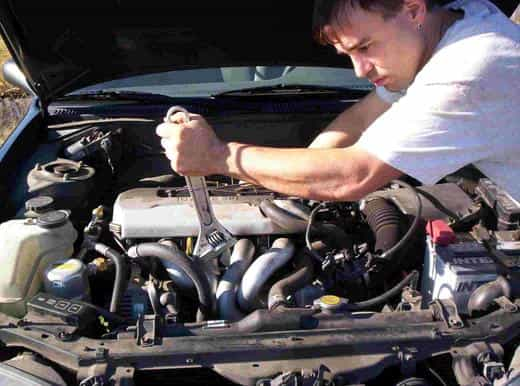
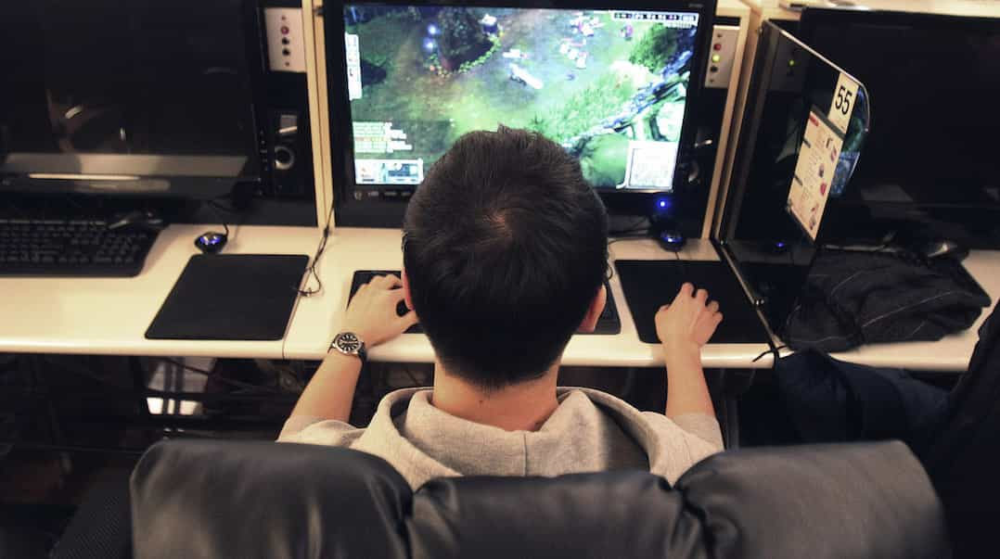
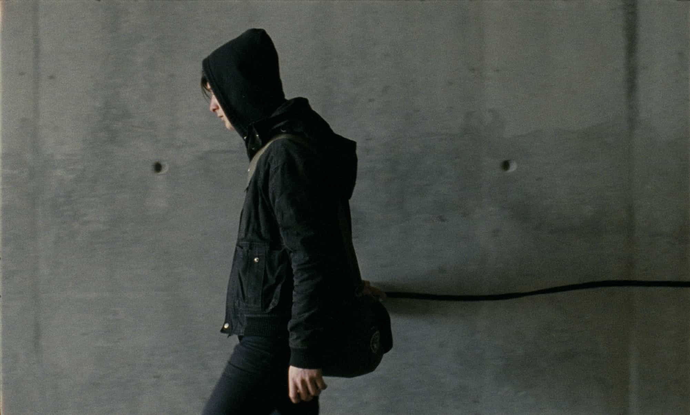

Corey is an iconoclast and the author of 'Man's Fight for Existence'. He believes that the key to life is for men to honour their primal nature. Visit his new website at primalexistence.com


My youth had been a disaster. I practically had no friends, people treated me like shit (and I let them), I never met a girl, I didn’t do any exercise whatsoever, I kept my mind dull and numb, I was undisciplined with some embarrassing grades, and I accomplished practically nothing.
While everyone else was cheerfully living out their youthful days, I was shy, angry, and miserable all at the same time, all the time. I wish I’d had someone to guide me during this difficult period, but my father had problems of his own and I had no one else that I could look up to or even trust. I was completely abandoned in my own clusterfuck world of pain and loneliness.
And because of this personal experience, I have a soft spot for teenagers who struggle with life. And I write this guide for the young readers here who may be going through the same struggles I had gone through in this crazy world of ours.
If you decide to ignore all the tips but one, let this be it.
The three pillars of life—in order—are: body, mind, and social. These are all basic stuff, but it’s often the basic stuff that teenagers end up neglecting.
With body, exercise and eat healthy. You must stay fit. And cut out all the junk food. You may not be so fat and unhealthy now, but it will accumulate and hit you eventually when your eating habits continue into your adulthood.
For mind, read non-fiction books to learn about the world. Those who don’t read non-fiction are like those who are blind or deaf.
And finally with social, connect with other men who share your values (I personally wouldn’t bother wasting time being friends with girls). A good friendship kindled at a young age can last you a life-time. Besides friendship, improve your communication skills by joining a debating club or toastmasters which will also boost your confidence. Or, if you happen to be an INTJ like me and think that everyone else is dumb and useless, learn to write instead. You’re going to need to communicate with people eventually unless you plan to live in the woods by yourself.

Due to lack of masculine guidance in our feminized society, you are most likely sweating over insignificant stuff like what other people think about you, the score on your biology test, and that girl you have a crush on whom you won’t even care about in few years (although she may seem like the world to you now). Meanwhile, you’re likely to neglect building a foundation for your future as you can’t see anything further than what’s right in front of you.
Remember that discipline is all that matters in success. So forget about all the small matters and dedicate yourself day in and day out into self-improvement—even if you don’t see any immediate results from the get-go.
No matter what your mom may have told you to boost your fragile ego, there is nothing special about you. If you happen to have an unrealistic dream like becoming the next big musician, the chances are, you won’t. Maybe you haven’t noticed yet, but the economy is in the gutter and the SJW daycare centers colleges that await you only want to rob you in exchange for a useless degree. You’ll be lucky to find a decent job in the future when things will only get worse. As a little clue for you, I know a chick who graduated from Harvard who is now working in Starbucks. It’s best to keep your options open and diversify your skills so that you’ll be ready to adapt to the uncertain times.
I posted this video before and it’s worth posting it here again:
And if you happen to be the one in a million who follows his dreams and becomes successful, this post shouldn’t deter you.

There is no better time start learning something useful than today. And as a teenager, you have the advantage of time and a youthful mind at your disposal, so don’t waste them.
Go learn to fix and build things, learn programming, learn to speak a new language, learn sales techniques, learn to fight, or heck, go learn how to skateboard if that’s your thing. Start learning something now that will reward you for the rest of your life and stick to it, because when you’re my age, you’re going to wish you had listened to me.
Speaking of which…

I would say the biggest mistake I made in my youth was wasting so much time in front of television, computer, and video games instead of doing things that bring value to my life. I would also include spectator sports, porn, movies, smartphones, and almost the entire internet to the list of offenders. Not only do these things waste your time, but they also degenerate your mind and body. The faster you get rid of them, the faster your life will improve.
Really, get off them starting today and get busy living. And if you think I’m not being forceful enough, read this classic article from our archives.
Our society lacks the rite of passage that mark the transition to manhood.
Not so long ago, a teenager would become a full man as soon as he got a job and a wife. But that is no longer the case today. In today’s society, manhood as a concept has been smudged out while some garbage, fictional phase called “adolescence” was invented to justify abandoning young men.
This, however, means that you are now free to be a man whenever you choose to be one. Being a man is all about character; it has little to do with your age or career. I’ve met some feckless career “men” in their 30’s and 40’s devoid of masculinity and I’ve also met few teenagers who were stronger and braver than the older men.
If you want to be a man, think, talk, and act like one. You don’t need anyone’s permission.

One of the fastest ways to become a man is to start taking full responsibility for all matters in your life. No more bitching, complaining, and blaming others for your problems. You have to start making the changes that you want to see in your life.
People don’t respect you? It’s your fault for being a loser. A girl rejected you? Too bad, move on and improve your game. You’re too “lazy” to do things because you don’t feel like doing them? Is that even an excuse?
Remember, no one can “make” you feel or do something you don’t want, only you can allow that to happen to yourself.
Dumb and impulsive teens are the biggest targets for selling useless, consumerist garbage as they are insecure in their pursuit for objects that convey status: don’t be one of them. Learn to save early on by practicing self-discipline, and try to learn about how to make money as soon as possible.

The vast majority of teens today are bunch of smartphone-addicted, attention-seeking, ADHD fucktards. If you’re a teen who managed to read this far instead of going TL;DR, then you’re probably not too bad.
Just about the only thing I managed to “accomplish” when I was a teenager was to not get sucked into the teen culture of partying, drinking, doing drugs and other retarded shit (not to mention their obsession for gayass music and fashion). Most of your clueless peers will only likely have negative influence on you, so avoid them like lepers and avoid living like the turds they are. Stick to whatever decent guys you can find and get a mentor if you can. An older, masculine man is the best teacher you can ever have at your age.
Last, don’t give up. Things may seem impossibly shitty now, but you have the ability to get through them and come out even stronger. I won’t make bullshit promises that things will magically get better and that you’ll live happily ever after, but you must fight through these crucial years of your life.
Yes, we live in an insane feminist society, but that can’t be your excuse to lie down and not act. My life didn’t exactly turn out the way I expected (and yours most likely won’t either), but I managed to get through my teenage years—and the even shittier period of early 20’s—and survived. I don’t have a dream life now, but considering how awful it was before, I feel as though I managed to crawl out of a hell, coming out tougher and wiser than ever before. And trust me when I say that things could’ve been a lot worse for me without my determination to turn things around.
Much more could be written about this subject, but I must keep short. Let me conclude by saying that by focusing your life energy into each and every day without worrying about whatever goals you may have, you’ll accomplish a lot more.
I have shown you the door, now it’s up to you to enter it. Go ahead and kick some ass.
Read More: The 7 Essentials Of Happy Manhood